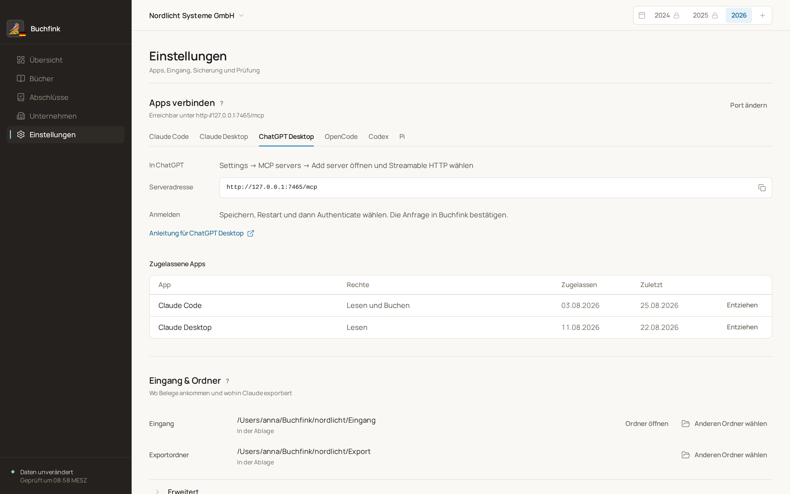

Verbinden
Den Agenten zulassen
Solange Buchfink geöffnet ist, läuft ein MCP-Server auf Ihrem Rechner, erreichbar nur unter 127.0.0.1. Ihr KI-Client meldet sich dort an. Buchfink zeigt im eigenen Fenster, welche App für welches Unternehmen mit welchen Rechten anfragt: Lesen oder Buchen. Erst Ihre Zustimmung gibt den Zugang frei.
Die Zulassung gilt für das geöffnete Unternehmen. In den Einstellungen sehen Sie die verbundenen Apps und entziehen den Zugriff mit einem Klick.

